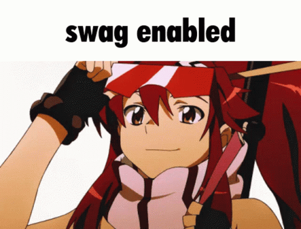

Gurren Lagann - Nick64
Gurren Lagann - Nick64
Wow, okay, it’s about time I finished watching this show.
Last night, I finally finished Gurren Lagann. I thought it was really good! I liked it a lot, and I’m glad I bought the Blu-ray set. I’m not gonna write an in-depth review or anything, just some quick thoughts I have about the show.
SPOILERS AHEAD!!!
First of all, I really like the style of the show and the atmosphere it sets up. I think the music is really good and the style of the art (except Episode 4) is really good, which I guess is expected, since this is the show that led to the creation of TRIGGER, one of my favorite anime studios known for their stylish and sharp artwork.
I also really liked the characters too, Simon is a really good character, and reminds me a lot of Shinji in terms of how he’s initially set up as being a wimp. Unlike Shinji though, he eventually grows out of his shell to become a hero, and I think that the show actually shares a lot of similarities to Evangelion in this regard. I usually wouldn’t try to shoehorn Evangelion into random topics, but considering both shows are made by the same studio, it’s interesting to see some of the parallels. I think while I enjoy the pessimistic but eventually somewhat hopeful tone of Evangelion, it’s hard to deny that the punchy and very optimistic attitude Gurren Lagann goes for is very exhilarating and really does a good job hyping you up.
Since I got off-topic with characters, I’ll just finish that by saying that I really like how it felt like every character got something in the show, even the more minor characters. Rossiu is one of my favorite characters in the show because of his development throughout the show.
I guess that’s gonna be it for positives, since that sums up everything and I don’t want to make this too long. As for what I don’t like…
Not much, really. I guess Episode 4 is stinky in terms of animation, but that’s understandable, considering the state of Gainax during the production of Gurren Lagann. I think the final battle was a wee bit drawn out and there was no point in having Boota turn into a human. I also don’t really get the whole scene with the extradimensional trap for Team Gurren, having them trapped in their dreams and all. It’s like “Oh yeah, they can never escape!”, and then they do somehow. I don’t know, it’s sorta strange, but whatever, I’m fine with putting it aside for the sake of the sheer awesomeness of the show.
Overall, really good, like a solid 9.5/10 from me. Bravo, Vince.

© 2023 Nick64 oh wait i dont care lol